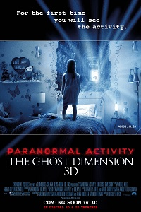

American movies that don't recoup their production costs and make a good profit domestically have at least one major hope in turning things around, and that hope lies with China. This is the situation recent release Crimson Peak finds itself in. The film opened to a disappointing $13.1 million here, and for a movie that has an estimated production and advertising budget of $73 million, the movie really needs China's help. Unfortunately, they probably won't get it. According to The Hollywood Reporter, China always says no to films that include anything that portrays ghosts, cults, or general supernatural plots in a realistic way. For obvious reasons, this spells trouble for Crimson Peak. The plot of the gothic romance centers on a young woman who can see ghosts and communicate with them. And, of course, she moves into a scary as hell haunted mansion. In other words, uh oh, Crimson Peak. With a population that's quickly nearing 1.4 billion people, the hope that the massive numbers of potential ticket buyers in China will come through is hard to resist. The problem, though, is that the Chinese government has these rather strict protocols when it comes to films of a ghostly nature. The creepy crawlies of the movie could look cartoonish and totally fake, but if, in the world of the movie, the supernatural threat is real, your film simply will not pass Chinese censors. It should be noted, though, that this supernatural censorship has not come close to stopping Chinese filmmakers from going all out with otherworldly movie plots. Those geniuses have discovered a rather simple way to subvert the system. All they have to do is guide the audience through a moody, jump-scare filled film, and then completely undo all their hard work by revealing the spectral sights to be completely false. That's right. Whatever ghost, demon, or hellish beast is revealed will end up being a figment of the character's imagination. Maybe the poor person is crazy. Maybe they were taught to believe in such things but they aren't really real. Maybe this beacon of supernatural activity was really dreaming the whole time. Either way, you will be led on a fantastic ride that ends to reveal a movie-long lie. The whole point of horror movies is to show us something that's not real (at least not for most of us, thank goodness). They immerse us in a dangerous world that's hard to escape and would surely make a lot of people who were exposed to it wish they had died long before getting wrapped up in it. In short, scary movies show us how good our lives really are. If we can't embrace the scares, they're no good to us. Now, many a filmmaker has carefully provided amended versions of their movies to suit Chinese theaters. But, if writer/director Guillermo del Toro went this route, how long would the film be? Ten or 15 minutes? Something tells me that making a lot of money with a Chinese release because everyone says Hey, go see this movie. It won't take up any time at all! is probably not the direction the filmmakers want to go.
The added hook this time is the sporadic use of 3D which, at least in the screening we attended, seemed utterly pointless. Instead of reinventing the wheel the filmmakers have simply refined it. One cool moment towards the final third aside, this is not worth your time or money. Another expansive American gaff is haunted; this time with the best looking couple so far and an added wisecracking sidekick in the form of a sibling. Cameras are set up, spooky things happen, a small child talks to someone who "isn't there" blah blah blah. The 3D doesn't work, and while this might be pitched as an extended version of the universe that was actually smartly implemented over the first few, it's essentially the same film. Different characters in too similar a set up fail to make it feel any different. Also, being asked to pay premium cinema prices for this is absolutely ludicrous. The empty city centre cinema where this reviewer attended (it wasn't screened for press) a late afternoon screening will hopefully teach the studio a lesson. Not a slight on anyone involved, the acting is fine and the execution same; this franchise is just done now. Also, we're pretty sure the found footage thing goes out the window in the opening minutes. The most shocking thing to cross my mind while watching it? How has all this time passed without another Blair Witch flick?